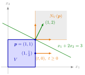

The normal cone at p collects every direction a in which p is a highest point of V: moving from p to any other point of V never increases a⊤x. Each nonzero such a is the normal of a supporting hyperplane at p, with V on the side opposite to a.

The figure shows Example 2 below, with each normal cone drawn from its own point. At the corner p=(1,1) the normals a≥0 fill a quarter plane (grey, bounded by the directions (1,0) and (0,1)); the normal (1,2) belongs to it and gives the supporting line x1+2x2=3, which touches V only at p. At the edge point (1,21) only the directions (t,0) with t≥0 remain, a single half-line: any tilted line through that point would cut through the edge.
The condition a⊤(x−p)≤0 says that a makes an angle of at least 90∘ with every direction x−p pointing from p into V. So NV(p) is the polar cone of the cone of these directions, and it is a closed convex cone that always contains 0. Its size reflects the shape of V at p: at an interior point it is {0}, since some direction into V makes an acute angle with any a=0; at a point on a round boundary it is a single half-line; at a corner it is a whole sector (Examples 1 and 2 below).
The definition needs p∈V. For a closed convex V and a point p∈/Int(V), which may lie outside V, the same formula still makes sense and defines the set SV(p)={a:a⊤x≤a⊤p∀x∈V}, which for p∈/V collects the normals a of the hyperplanes through p with V on the side a⊤x≤a⊤p, together with 0 (Example 3 below).
The normal cone is an optimality condition in disguise: c∈NV(p) says precisely that c⊤x≤c⊤p on V, that is, p is a global maximum point of the linear function c⊤x on V. A common misconception is that a boundary point has one normal vector; at a corner it has many, and when V lies in a hyperplane, NV(p) even contains both a and −a (Example 4 below).
For a=0:a∈NV(p)⟺Ha is a supporting hyperplane of V through p with a⊤x≤a⊤p on V.
If p∈Int(V), then NV(p)={0}.
NV(p) is the polar cone of {λ(x−p):x∈V,λ>0}, and it is a closed convex cone.
Let V be nonempty, closed and convex and p∈Rn∖Int(V). Then SV(p)={a:a⊤x≤a⊤p∀x∈V} is a closed convex cone containing a nonzero vector, and SV(p)=NV(p) if p∈V∖Int(V).
For a nonempty closed convex V and p∈/V with nearest point q∈V,(p−q)⊤(x−q)≤0 for all x∈V, so p−q∈NV(q)∖{0} (see Nearest Point of a Closed Convex Set).
For c∈Rn and p∈V:p maximizes c⊤x over V⟺c∈NV(p) (directly from the definition).
1. A disc. Let V=Cl(B(0;1))⊆R2 and p=(53,54), so ∥p∥=1. The largest value of a⊤x on V is ∥a∥, attained at x=a/∥a∥ for a=0. So a∈NV(p) if and only if ∥a∥≤a⊤p. By the Cauchy-Schwarz inequality, a⊤p≤∥a∥∥p∥=∥a∥, with equality only for a=λp,λ≥0. Hence NV(p)={λ(3,4):λ≥0}, and the only supporting line through p is the tangent 3x1+4x2=5. At the interior point 0,NV(0)={0}.
2. Corners and edges of a square. Let V={x∈R2:0≤x1≤1,0≤x2≤1}. At the corner p=(1,1),a⊤(x−p)=a1(x1−1)+a2(x2−1); testing x=(0,1) and (1,0) gives a1≥0 and a2≥0, and these suffice, so NV(p)={a≥0}: every line a1x1+a2x2=a1+a2 with a≥0,a=0, supports V at the corner, for example x1+2x2=3. At the edge point (1,21), testing (1,0) and (1,1) forces a2=0 and testing (0,21) gives a1≥0, so NV={(t,0):t≥0}.
3. A point outside. For the closed unit disc V and p=(2,0)∈/V,a∈SV(p) means ∥a∥≤2a1, that is, a1≥0 and ∣a2∣≤3a1. So SV(p)=Cone({(1,3),(1,−3)}). The two boundary normals give the tangent lines from p to the circle, x1±3x2=2, which touch it at (21,±23); every normal in between gives a line through p that misses V.
4. A set inside a line. Let V be the segment from (0,0) to (2,0) and p=(1,0). Then a⊤(x−p)=a1(x1−1) with x1∈[0,2], which is ≤0 for all x1 only if a1=0. So NV(p)={(0,t):t∈R}, a whole line. Here Int(V)=∅, so p is a boundary point even though it is the midpoint, and the supporting line x2=0 contains all of V.
Aliases: normal cone of a convex set, cone of normal vectors
Keywords: N_V(\boldsymbol{p})={\boldsymbol{a}\in\mathbb{R}^n\colon\boldsymbol{a}^{\top}(\boldsymbol{x}-\boldsymbol{p})\leq0\ \forall\boldsymbol{x}\in V}, S_V(\boldsymbol{p}), N_V(\boldsymbol{p})={\boldsymbol{0}}\text{ for }\boldsymbol{p}\in\operatorname{Int}(V), normal vectors of supporting hyperplanes through a point, polar of the cone of directions
Symbols: element of, for all, lambda, real numbers, square root, subset
Last updated: 10 November 2026 16:43
Normal ConeNormal Cone of a Polyhedral SetSupporting Hyperplanes from GradientsPolar ConeSupporting HyperplaneConvex ConeConvex Set in R^nInterior of a SetNearest Point of a Closed Convex SetSeparation of a Point and a Closed Convex SetDual Linear ProgramGlobal Maximum and Minimum on \(\mathbb{R}^n\)